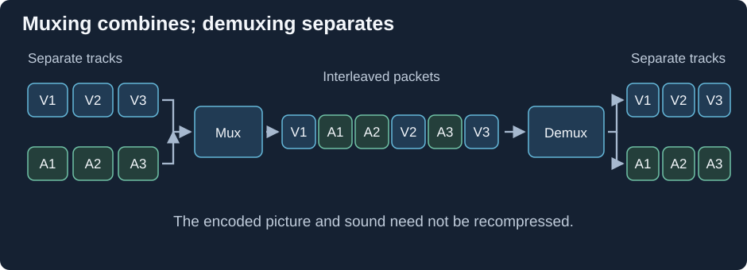

Multiplexing and Demultiplexing
A video encoder and an audio encoder produce different sequences. A multiplexer, or muxer, writes those sequences into one package. A demultiplexer, or demuxer, reads the package and routes the data back to its component streams.

Illustrative interleaving. These media packets are distinct from network packets, and their sizes and durations need not match.
Why alternate the stored data?
Suppose a film stored all its video first and all its audio at the end. To play the opening, a reader would need bytes near the beginning for picture and bytes much later for sound. A reader obtaining the file only from front to back would not have the opening audio when it needed it.
Interleaving puts portions of related streams near one another. The muxer can write an upcoming group of video and audio, then another group, while preserving each stream's own timestamps. It does not make audio packets and video frames share one fixed duration. It arranges their storage to make nearby media time practical to read.
A demuxer parses the surrounding headers and obtains stream identifiers, encoded bytes, timestamps, and configuration. It sends each encoded component to a matching decoder. The file's alternating storage order is therefore turned into several queues, rather than decoded as one undifferentiated sequence.
Trace a remux
Take an MKV with one video, two soundtracks, and subtitles. A remux selecting video and Audio 1 follows this sequence:
- Read Matroska track descriptions and blocks.
- Identify the selected tracks and retain their encoded data and timing.
- Translate configuration, timestamp units, or framing where the destination requires it.
- Write the new container's descriptions, sample storage, and navigation information.
Audio 2 is absent because of selection, not because the main picture was recompressed. A chapter list or font attachment needs its own preservation decision because it is not one of the two selected encoded streams.
Stream copy skips picture reconstruction and new video encoding. It can still alter bytes around the encoded units. For example, AVC units may be stored with start codes in one arrangement and length prefixes in another; translating those delimiters leaves the encoded picture information intact.
For an Emby Direct Stream route, this is how compatible video can be delivered in a package the app expects. If audio is also converted, its branch passes through an audio decoder and encoder while the video branch remains a copy.
An effective comparison lists the intended output components first, then verifies their content and timing. It checks what the muxer was asked to write rather than assuming that an unchanged video codec implies an unchanged whole presentation.